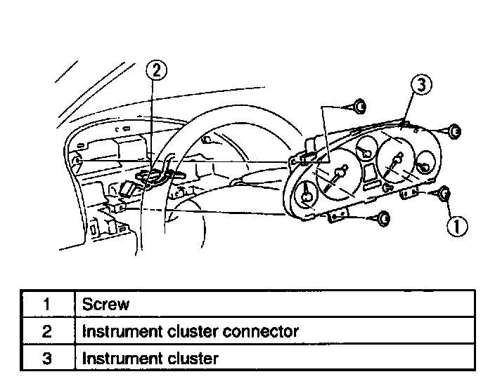

Operation CHARM
: Car repair manuals for everyone.
Home
>>
Mazda
>>
1999
>>
MX-5 Miata L4-1.8L DOHC
>>
Repair and Diagnosis
>>
Instrument Panel, Gauges and Warning Indicators
>>
Instrument Cluster / Carrier
>>
Service and Repair
>>
Instrument Cluster Removal and Installation
Instrument Cluster Removal and Installation
INSTRUMENT CLUSTER REMOVAL/INSTALLATION
1.
Disconnect the negative battery cable.
2.
Remove the meter hood.

3.
Remove in the order indicated in the table.
4.
Install in the reverse order of removal.